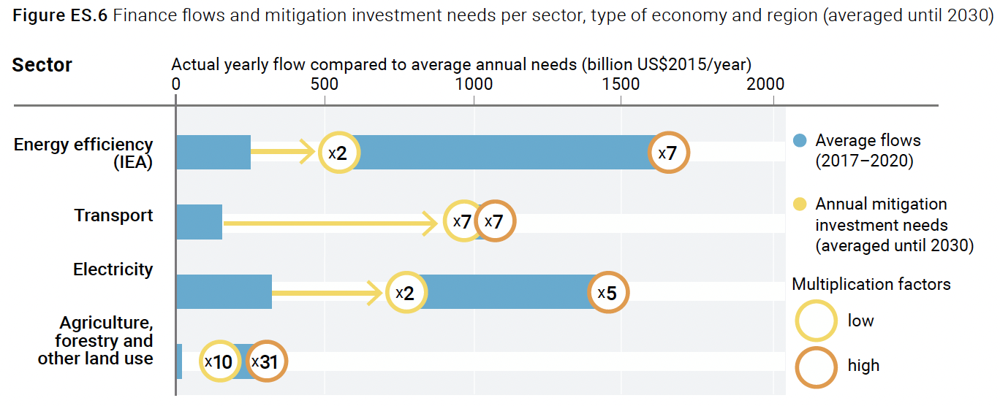
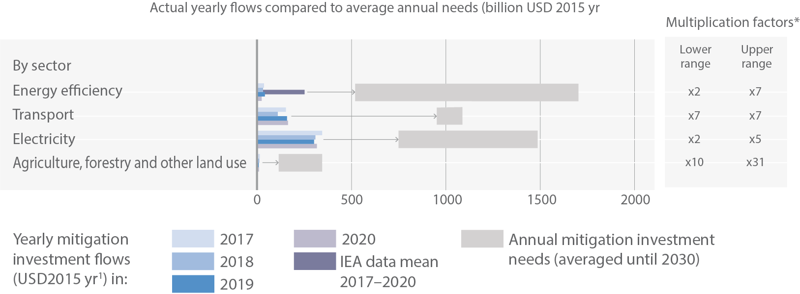
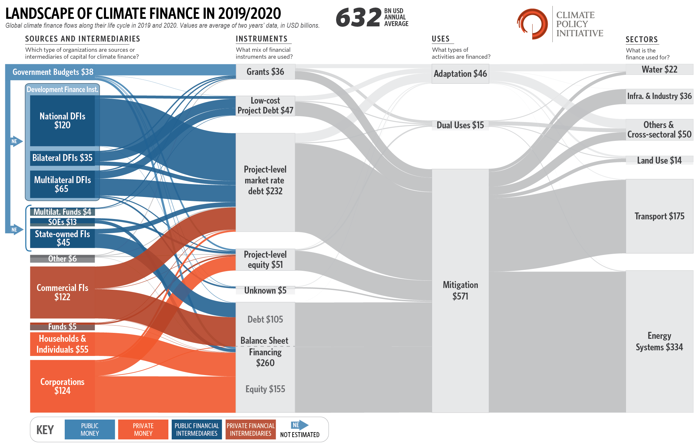
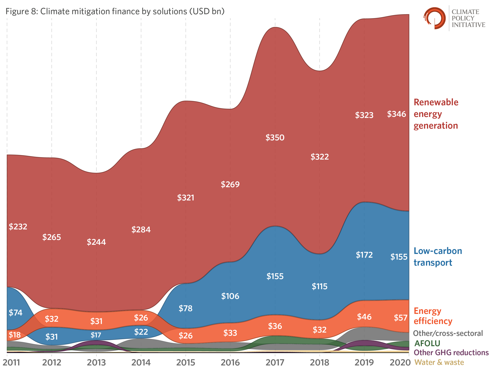

Last time 1 , I discussed why I believe that Venture Capital is the wrong economic model to address climate control, and it got me thinking, “If not VC, then how will the transition be financed?” Previously, I noted (slightly tongue in cheek) that the global brain trust’s proposed total annual budget for decarbonizing the energy sector amounted to “more than all the money in the world.” 2 We know it’s a considerable number in total, but there are a lot of components. If we view it as an itemized bill for “investments in our future” rather than a prix fixe bill for the entire project, then we should be able to determine a risk profile (and match it with an investment strategy).
Unfortunately, current ecopolitics asserts that if scientists induce enough fear into world leaders regarding their present recklessness, the world will open its collective checkbook and cry out with a singular voice to tackle the existential problem called “The Climate Crisis”. That’s fantasy, but as a Hollywood script, it might merit a sequel to the science-light eco-flick The Day After Tomorrow . [Note: That movie had a $500M+ box office on a $125M budget. Filmmaking might be a better investment than most of today’s cleantech. Perhaps we can get some of the on-strike scriptwriters to keep their skills sharp, write the script for kicks, and then reinvest the profit in something that will make a long-term difference.]
I have discussed economics in previous installments, including the terminal price of emissions (nobody will pay the price forever, so ≤$0) 3 , a series on “holoeconomics” (how looking at energy from both sides of transactions helps to explain market actions) 4 , and how the Russian war in Ukraine impacted gasoline prices in the US 5 .
Let’s take a couple of points as non-negotiable and then look at the math about how the world will need to change if the IPCC’s financial scenario is realized. First, let’s assume that the world remains politically pluralistic, such that prescriptive central-planning solutions to problems that all stakeholders must obey are dead on arrival. Second, let’s affirm that logical altruism isn’t as strong a motivator as cold hard cash. While some may pay for something they can’t have, today, that’s pretty high on Maslow’s Hierarchy of Needs (in simpler terms, if you’re below the poverty line or at war, you’re not spending money on carbon offsets). So, we will need global finance from affluent societies to solve the problem, and investors must make money. But $4 trillion annually is a lot of international finance, so it’d better pay off.
This enormous number comes from Figure ES.6 of the Executive Summary of the Sharm el-Sheikh Implementation Plan 6 (the report of COP27) or Figure 7.1 of the same document (they’re identical), here (Sector info only):

This document refers back to Figure 15.4 of the IPCC AR6 WGIII report 7 titled “Breakdown of recent average (downstream) mitigation investments and model-based investment requirements for 2020–2030 (USD billion) in scenarios that likely limit warming to 2°C or lower.” This figure is (edited for consistency):

The data source is summarized in the legend:
Mitigation investment flows and model-based investment requirements by sector...The model quantifications help to identify high-priority areas for cost-effective investments, but do not provide any indication on who would finance the regional investments.
So, in other words, money is needed, but Lord only knows where it’ll come from in the future. Reading further, however, we can at least see where the actuals have come from:
Data on mitigation investment flows are based on a single series of reports (Climate Policy Initiative, CPI) which assembles data from multiple sources . Investment flows for energy efficiency are adjusted based on data from the International Energy Agency (IEA). Data on mitigation investments do not include technical assistance (i.e., policy and national budget support or capacity building), other non-technology deployment financing.
So, this is just a baseline retrospective from a single source (except for apparently choosing IEA data when convenient), and they’re just direct costs without interest, project management, or other items. The projections are based on the modeled impact of these factors and historical prices and include only direct costs.
But this resource led me to a glorious chart, a Sankey diagram showing current sources and uses of dollars!

{kind=link}
This diagram answers, but also begs, many specific questions, but it confirms the bleak prospects for venture finance of climate projects. There’s a lot to unpack, but my MBA training taught me to look at the debt-to-equity ratio as a measure of risk (and its counterpoint, reward). To calibrate, biotech (a risky bet with a correspondingly large payoff) has a D/E ratio of about 0.2, while mortgages (a low-risk investment) are about 2.9. Focusing on the bottom left grey square, balance sheet financing where public money doesn’t have an outsized influence, the D/E of climate finance is 0.68, placing it somewhere around Internet retail and restaurant chains, and, interestingly, based on the opener, entertainment. So, the financial community, as a rule, perceives climate financing as if it were primarily an execution risk. And, even though it’s not a zero-sum game, if money is invested in climate, other investments will inevitably suffer because lenders must make choices.
Thankfully, the CPI has been doing this consistently for a decade, so we can also look at historical data trends to see what might need to be true if the cash flow is going to grow to the desired level:

In the past decade, there’s been an apparent steady increase, roughly doubling the investment—this jives with everyday experience. Most of the expense has been on generation (solar PV, wind) and transport (EVs), a trend that’s likely to continue for a while.
But what about the modeled requirements in the future? Can this trend be dramatically accelerated? And, if so, will it make a difference? I’m damned skeptical. Here’s why. The legend of Figure 15.4 states:
Data on mitigation investment requirements for electricity are based on emission pathways C1, C2 and C3 (Table SPM.1) 8 . For electricity investment requirements, the upper end refers to the mean of C1 pathways and the lower end to the mean of C3 pathways. Data points for energy efficiency, transport and AFOLU [Agriculture, Forestry, Other Land Use] cannot always be linked to C1–C3 scenarios. Data do not include needs for adaptation or general infrastructure investment or investment related to meeting the [sustainable development goals] other than mitigation, which may be at least partially required to facilitate mitigation. The multiplication factors show the ratio of average annual model-based mitigation investment requirements (2020–2030) and most recent annual mitigation investments (averaged for 2017–2020). The lower and upper multiplication factors refer to the lower and upper ends of the range of investment needs.
You don’t actually need to understand all that gibberish. I’ll explain what I can.
Return to Figure 15.4: To meet various goals, investments in energy efficiency are modeled to go from $57B per year to $500 - $1,500 B per year average between now and 2030 [CPI and IEA don’t even agree on a definition of efficiency, and their estimates differ by hundreds of billions of dollars! Plus, the “average” will start small and get bigger. The growth rate must be huge!] Transportation and electrification (probably together) must grow to be trillion-dollar average annual investments in the same time frame. This assumes that rational, conservative bond investors will be willing to take on long-term risks at the same terms in an increasingly volatile world of climate variability. I bet the expected interest rates will be higher than they are now. Inflation be damned!
But, more seriously, even though the financial modelers invoke a “scenario” projected to keep the world below 2°C in every instance, they haven’t considered the sine qua non of these scientific projections— operational direct air capture that leads to engineered net zero! And, there’s no conclusive evidence that the investments made over the last decade have achieved anything regarding what matters: controlling our atmosphere's composition. So who knows how they model the need!
At least “water” is a line item.
There’s an economic concept here that cannot be emphasized strongly enough. When it comes to issues at the scale of energy, there are unavoidable dis economies of scale that become difficult to model accurately. The most cost-attractive projects receive the first investments, while subsequent projects show diminishing returns. It’s not a matter of simple spreadsheet multiplication. The least efficient processes are addressed before more efficient ones; solar PV is installed where it creates the most power; electric vehicles are deployed where range, cost, and charging infrastructure is not limited. In every instance, projects are only funded where consumers are willing and able to pay because lenders expect to get their money back. The next instance will be less attractive than the last until the investment is no longer profitable.
It’s not a matter of throwing enough money at the problem, people! We must do it intelligently, with scientific insight and the endgame (climate control ) in mind.
Thank you for reading Healing the Earth with Technology. This post is public so feel free to share it.
[See earlier posts in this series]
[See earlier posts in this series]
[See earlier posts in this series]
[See earlier posts in this series]
[See earlier posts in this series]
This is a typo. The table is SPM.2, and C1, C2, and C3 refer to scenarios of 1.5°C, 1.5°C with overshoot, and 2°C respectively.